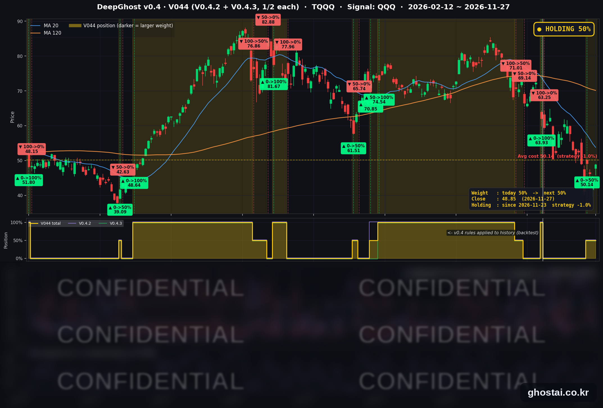

조기 폐장일 반도체 반등에 나스닥 2.3%·TQQQ 7.9% 상승, 비중 50% 유지
· Ghost.AI 데일리 리포트
👻 매일 시그널과 히스토리를 홈페이지에서 한눈에 → www.ghostai.co.kr
회원 페이지 안내 — 회원 가입 데일리 레포트의 "오늘의 매매 신호"는 26년 12월 31일까지만 제공됩니다. 이후는 회원 페이지(무료) 에서 확인하시기 바랍니다.
추수감사절 다음 날 13시에 일찍 끝난 장에서 반도체 종목이 반등을 이끌어 나스닥은 2.31%, S&P 500 은 1.60%, 다우는 1.18% 올랐습니다. 이번 주 QQQ 는 6.99% 올라 2025년 4월 이후 가장 큰 주간 상승을 기록했지만, 나스닥은 10월 6일 최고 종가보다 아직 12.57% 낮고 주요 지수는 모두 200일선 아래입니다. 10년물 금리는 8.6bp 올라 4.934%, VIX 는 23.81 로 내렸습니다. TQQQ 는 7.88% 오른 48.85달러로 마감했고, 전략은 새 신호 없이 비중 50% 를 유지합니다.
📊 오늘의 매매 신호
| 항목 | 내용 |
|---|---|
| 오늘의 신호 | 🟡 신규 신호 없음 — 전략은 TQQQ 비중 50% 보유를 유지합니다 |
| 전략 비중 | 50% → 다음 거래일(11월 30일) 시가 50% |
| 포지션 상태 | 📈 TQQQ 일부 보유 중 (비중 50%) |
| 보유 시작일 | 2026-11-23 (4거래일째) |
| 매수 체결가 → 현재가 | $50.14 → $48.85 |
| 보유 기간 전략 수익률 | -0.99% |
TQQQ 시그널 — IN POSITION (비중 50%)
현재 상태: TQQQ 일부 보유 중 (비중 50%) | 보유 기간 전략 수익률 -0.99%

전략은 11월 23일(월) 미국 장 시가 50.14달러에 산 TQQQ 비중 50% 를 유지합니다. 오늘 새 매매 신호와 체결은 없고, 다음 거래일인 11월 30일(월)에도 매매는 없습니다.
TQQQ 는 7.88% 오른 48.85달러로 마감했습니다. 비중 50% 를 반영한 보유 기간 전략 수익률은 11월 25일 -4.72% 에서 -0.99% 로 올라왔습니다. 이번 주 TQQQ 는 11월 20일 종가보다 18.57% 올랐지만, 종가는 아직 매수 체결가보다 낮습니다.
홈페이지 「오늘의 시그널」은 v0.3 기준이라 오늘도 현금 보유로 표시됩니다. 이 글의 신호는 같은 AI 신호에 비중 조절을 더한 개선판 v0.4 기준이며, 자세한 화면은 회원 페이지에서 볼 수 있습니다.
오늘 미국 시장 — 시황 요약
11월 26일(목)은 추수감사절 휴장이었고, 11월 27일(금)은 13시(미 동부시간)에 일찍 끝났습니다. 아래 등락률은 모두 11월 25일 종가 대비입니다.
지수 마감
| 지수 | 종가 | 등락률 | 이번 주 (11/20 대비) |
|---|---|---|---|
| S&P 500 | 7,297.49 | +1.60% | +5.60% |
| 나스닥 종합 | 24,129.50 | +2.31% | +6.68% |
| 다우존스 | 50,774.94 | +1.18% | +5.46% |
| 러셀 2000 (IWM) | 273.79 | +1.83% | +6.69% |
| QQQ (나스닥100) | 650.99 | +2.69% | +6.99% |
| TQQQ | 48.85 | +7.88% | +18.57% |
모든 지수가 높게 출발했고, 장중 저가도 11월 25일 종가보다 높았습니다. 나스닥과 QQQ 는 고가 근처에서 마감했습니다. 다우는 4거래일 연속 올랐습니다.
이번 주 QQQ(+6.99%)와 S&P 500(+5.60%)은 2025년 4월 11일 마감 주 이후 가장 많이 올랐습니다. 그래도 10월 6일 최고 종가보다 나스닥은 12.57%, S&P 500 은 6.67% 낮고, 11월 한 달로는 QQQ 가 5.72% 내린 상태입니다(11월 30일 하루 남음). 주요 지수는 모두 200일 이동평균선 아래이며, 다우는 200일선에 1.5포인트 못 미쳐 마감했습니다. 나스닥은 200일선보다 4.15% 낮습니다.
국채 금리 동향
| 만기 | 11/25 | 11/27 | 전일 대비 |
|---|---|---|---|
| 3개월 | 4.155% | 4.150% | -0.5bp |
| 5년 | 4.660% | 4.746% | +8.6bp |
| 10년 | 4.848% | 4.934% | +8.6bp |
| 30년 | 5.235% | 5.325% | +9.0bp |
5·10·30년물이 8.6~9.0bp 올라 11월 25일 하락분보다 더 크게 되돌렸고, 3개월물은 거의 그대로였습니다. 2년물은 CNBC 기준 약 4.70% 입니다. CNBC 는 다음 주 고용·임금 지표를 앞둔 포지션 조정을, 트레이딩이코노믹스는 기술주 반등으로 안전자산인 국채 수요가 줄어든 것을 이유로 들었습니다. 10년-3개월 스프레드는 78.4bp 로 전일(69.3bp)보다 벌어졌고 역전은 없습니다. 장기 금리가 9bp 가까이 올랐지만 이날 주가는 기술주 반등의 영향을 더 크게 받았습니다.
연준 발언 & 금리 패스
- 11월 27일: 연준 위원의 연설·발언 일정은 없었습니다.
- 최근 발언: 윌리엄스 뉴욕 연은 총재(11월 23일)는 물가가 너무 높다며 2% 로 되돌리는 일이 필수라고 했고, 필요하면 연속 회의 인상도 배제하지 않는다고 했습니다.
- 금리 경로: 기준금리는 3.75~4.00% 입니다. 시장은 12월 8~9일 회의의 25bp 인상을 거의 확실한 것으로 반영하고 있고, 1월 추가 인상도 거론됩니다(트레이딩이코노믹스). 회의 전 발언 자제 기간은 11월 28일부터이며, 회의 전 마지막 큰 지표는 12월 4일 11월 고용보고서입니다.
오늘의 핵심 이슈
- 반도체가 반등을 이끌었습니다. S&P 500 구성종목 중 반도체·하드웨어 41종목이 모두 올랐고(중간값 +4.56%), 메모리·저장장치 종목이 가장 많이 올랐습니다. 샌디스크는 15.96% 올라 S&P 500 상승률 1위였습니다. 여러 매체는 회사별 뉴스보다 11월 급락 뒤 AI 관련주로 매수세가 돌아온 것을 이유로 들었고, 같은 날 한국·일본 증시도 반도체주 중심으로 반등했습니다.
- 지수 상승은 반도체 대형주 몫이 컸습니다. S&P 500 구성종목은 494개 중 398개가 올랐고 등락률 중간값은 +0.89% 로, 지수(+1.60%)보다 작았습니다. 반면 엔비디아·마이크로소프트·애플·알파벳은 1% 미만 올랐습니다. 업종별로는 정보기술(+3.21%)이 가장 강했고, 중간값이 내린 업종은 필수소비재(-0.06%)뿐입니다.
- 다음 주 지표가 12월 회의 전 마지막 변수입니다. 10월 상품수지 적자는 1,495억 달러로 9월(1,351억 달러)보다 커졌습니다. 12월 1일 ISM 제조업지수와 10월 구인·이직(JOLTS), 12월 4일 11월 고용보고서가 이어집니다. 고용이 강하게 나오면 내년 추가 인상 기대가 커질 수 있습니다. 연휴 장의 얇은 거래로 만든 상승이라 거래가 정상으로 돌아오는 다음 주에 유지되는지도 확인이 필요합니다.
변동성 & 투자심리
VIX 는 11월 25일 28.29 에서 23.81 로 15.8% 내려 11월 16일 이후 가장 낮아졌습니다. 다만 200일 평균(18.83)보다는 여전히 높습니다. 공포탐욕 지수는 25(공포)로 직전 16(극단적 공포)에서 올라왔습니다(feargreedmeter.com 표시값, 참고용).
매크로 & 원자재
| 품목 | 종가 | 등락률 |
|---|---|---|
| 원유 ETF (USO) | $137.77 | -1.52% |
| 금 ETF (GLD) | $334.40 | +2.12% |
원유(USO)는 사흘 만에 내렸고, 하락 이유는 확인되지 않았습니다. OPEC+ 회의는 11월 29일(일)입니다. 금(GLD)은 이틀 연속 올라 이번 주 3.57% 올랐지만, 1월 29일 최고 종가보다 32.57% 낮습니다.
주요 종목 동향
| 종목 | 종가 | 등락률 | 비고 |
|---|---|---|---|
| MU | 646.95 | +7.60% | 메모리주 동반 상승, 6/25 최고 종가 대비 -46.69% |
| QCOM | 179.27 | +6.29% | 이번 주 +19.56% |
| INTC | 57.40 | +5.38% | 이번 주 +11.93% |
| TSLA | 400.00 | +5.22% | 이번 주 +15.67% |
| AMZN | 254.12 | +3.96% | 블랙프라이데이 |
| AVGO | 312.34 | +3.82% | 6/2 최고 종가 대비 -35.14% |
| META | 628.96 | +3.13% | 이틀 연속 3% 이상 상승 |
| NFLX | 60.93 | +2.56% | 4거래일 연속 상승 |
| AAPL | 358.54 | +0.83% | 사상 최고 종가 |
| NVDA | 150.49 | +0.80% | 시가보다 0.95% 낮게 마감, 이번 주 +19.88% |
| GOOGL | 274.96 | +0.68% | 시가보다 1.50% 낮게 마감 |
| MSFT | 492.85 | +0.60% | 시가보다 1.33% 낮게 마감 |
커버리지 12종목이 모두 올랐습니다. 반도체 4종목(MU·QCOM·INTC·AVGO)이 3.8~7.6% 로 상위였고, 시가총액 상위 4종목(AAPL·NVDA·MSFT·GOOGL)은 1% 미만이었습니다.
다음 일정 (미 동부시간)
- 11/28(토) 연준 위원 발언 자제 기간 시작, 11/29(일) OPEC+ 회의
- 11/30(월) 정상 개장, 11월 마지막 거래일·사이버먼데이
- 12/1(화) 10:00 11월 ISM 제조업지수·10월 구인·이직(JOLTS), 보먼 부의장 하원 증언(은행 감독)
- 12/3(목) ISM 서비스업지수, 12/4(금) 08:30 11월 고용보고서
- 12/8~12/9 FOMC (성명 9일 14:00), 12/10(목) 08:30 11월 CPI
Ghost.AI — Quantitative AI Investment
Model: DeepGhost v0.4 | Transformer-Based Deep Learning
Coverage: 14 tickers | Updated every trading day after US market close
⚠️ 본 자료는 정보 제공 목적으로만 작성되었으며 투자 권유가 아닙니다. 모든 투자의 책임은 투자자 본인에게 있습니다. 과거 성과가 미래 수익을 보장하지 않습니다.
[유의사항]
- 본 서비스는 불특정 다수를 대상으로 발행되는 단방향 정보 제공 서비스이며, 투자자 개인의 재산 상황·투자 목적·위험 선호도를 반영한 개별 투자 조언이 아닙니다.
- 고스트에이아이 주식회사는 고객과 쌍방향 의사소통(개별 상담, 맞춤형 자문 등)을 제공하지 않습니다.
- 본 콘텐츠는 투자 권유 또는 매매 주문의 청약·청약의 권유에 해당하지 않으며, 최종 투자 판단 및 그에 따른 손익의 책임은 전적으로 투자자 본인에게 있습니다.
고스트에이아이 주식회사